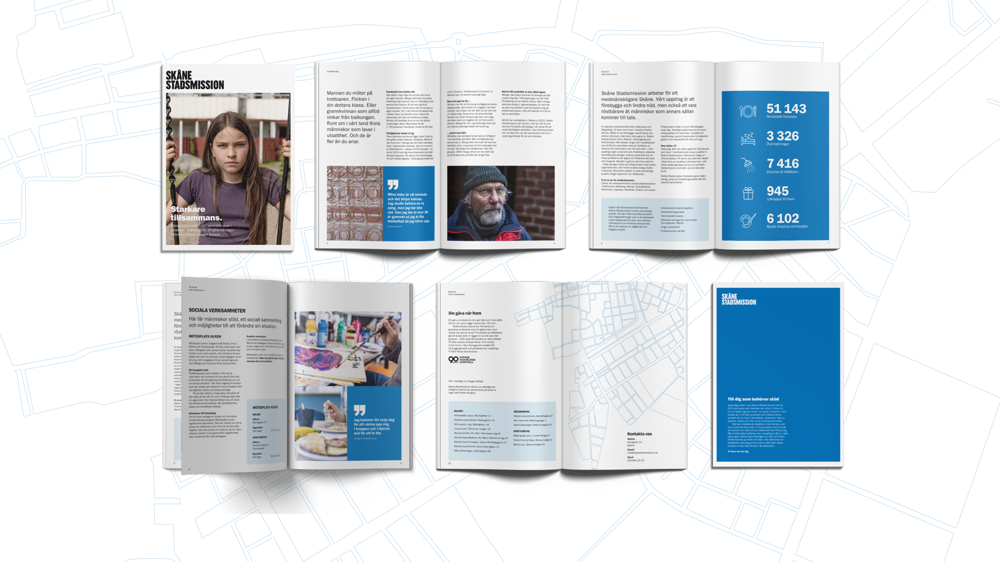
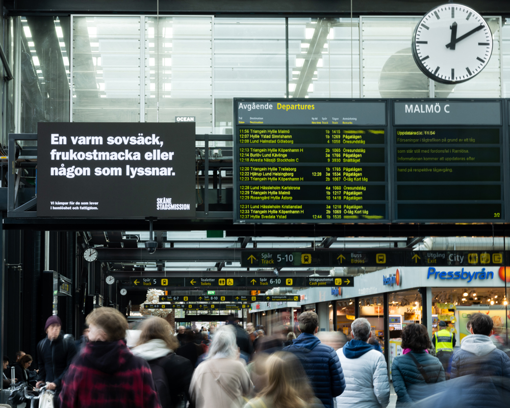

SKÅNE STADSMISSION
During the fall of 2023, I was part of the team tasked with assisting
Skåne Stadsmission in implementing their new logo and graphic
profile. Additionally, we were commissioned to create new posters and
advertisements following these new guidelines.
I made updates to existing materials according to the new profile. We
also developed several advertisements and a ’who we are’ brochure.
It involved close collaboration with the copywriter, allowing us the
opportunity to iterate on text and design collaboratively.